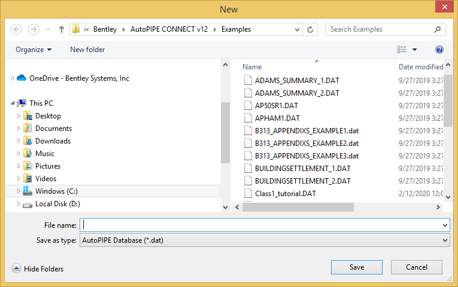
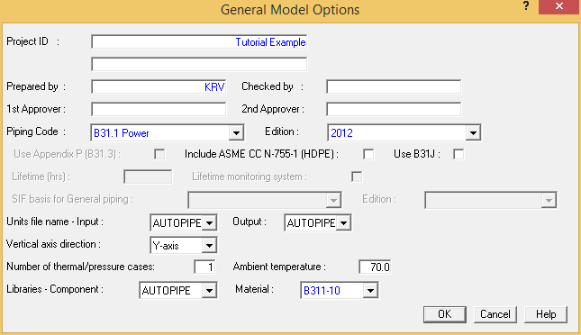
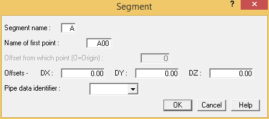
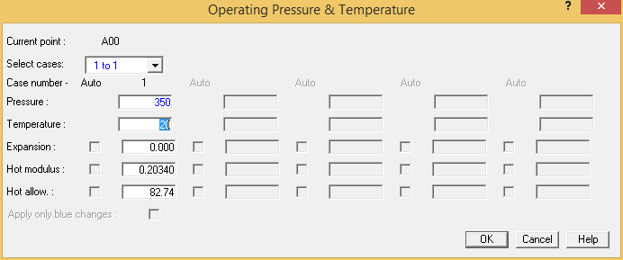

Defining a New Model
The first step in creating a new model is to name and define the model as described below:
- Select File > File > New to display the New dialog.

- Indicate the path where the file will be stored using standard Windows file selection techniques (i.e., highlight the appropriate drive, then the directory where the file will be stored).
- After the path information is specified, type the name of the model in the File name field, and then press Save.
| Note: |
The next several steps will present a series of dialogs for the definition of the model and its operating parameters. Each of these dialogs is discussed briefly below for the purpose of demonstrating the sequence of steps required to create a new model. In the next chapter we’ll take a closer look at the definition of model properties. As always, you can also refer to the help for comprehensive dialog information. |
- The General Model Options dialog is displayed as shown below.

Complete each of the fields to adequately describe your model. Of particular note is the Piping Code selection list, which allows you to choose from a variety of pre-defined piping codes. After completing the dialog, press OK.
| Note: |
You can set SI units to be your default units by copying the SI.UNT file in the program folder into AUTOPIPE.UNT file. You can also use DIN sizes by selecting AUTODIN as the component library. |
- The Segment dialog is displayed for the definition of the initial segment that will be used as the starting point of your model. Define the starting point name, any offset values, and a pipe identifier that will be associated with all components that belong to that segment. As components are placed on the line, point names are generated. The default point names always begin with the segment name (“A” in the example below) to which they belong. After completing the dialog, press OK.

- The Pipe Properties dialog is displayed. From this location you define the initial pipe properties of the model. This dialog will be explained in the next chapter. After completing the dialog, press OK.
- The Operating Pressure and Temperature dialog is displayed for the definition of operating loads. Enter values in each of the fields as required by the demands of your system, then press OK to close the dialog.

- The setup of the new model is complete. You can now add a component to the first point (A00) in the system (or insert an offset distance from this point). In the next chapter, we’ll create a new model and demonstrate methods for placing and connecting components.